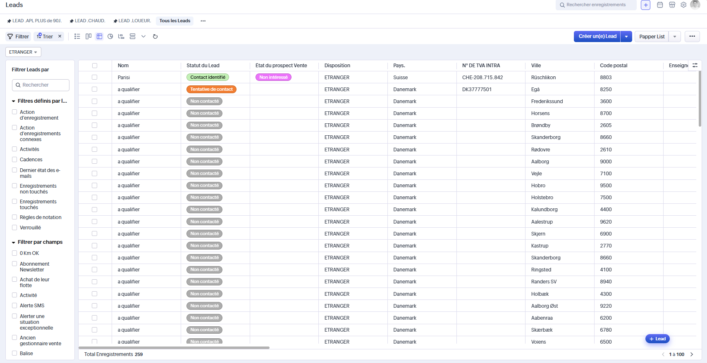
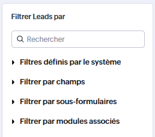
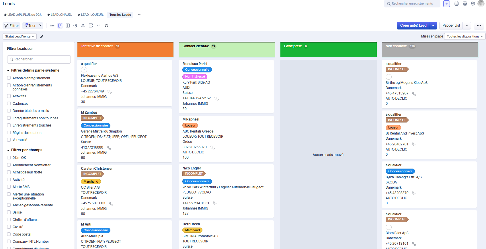

Analyse du module Leads de Zoho CRM : lisibilité du tableau, qualité réelle des champs,
richesse des listes de valeurs, surcharge des filtres, intérêt des vues alternatives
et niveau d’exploitabilité du détail d’un lead pour les équipes métier.
Lecture rapide
Synthèse
Le module Leads contient une base exploitable et structurée, mais sa lecture est pénalisée
par un tableau trop dense, des champs souvent vides, des listes de valeurs nombreuses
et un niveau de filtre supérieur au besoin réel des utilisateurs.
Constat principal
Structure riche mais lourde
Le module contient beaucoup d’informations utiles, mais elles sont présentées dans une interface trop chargée.
Impact métier
Lecture et tri ralentis
Le vendeur ou gestionnaire doit parcourir trop de colonnes et trop de champs avant d’agir.
Priorité audit
Mieux hiérarchiser l’essentiel
Le besoin principal n’est pas d’ajouter des données, mais de rendre visibles les données vraiment utiles.
Vue 01
Tableau principal
La vue liste constitue le cœur du module. Elle affiche 259 enregistrements avec pagination par 100,
dans un tableau large qui concentre l’essentiel des informations commerciales, administratives et de suivi.

Vue liste — tableau principal du module Leads avec colonnes nombreuses et pagination.
Champs visibles
Nom, Enseigne(s), Code postal, Ville, N° DE TVA INTRA
Disposition, Pays, État du prospect Vente, Statut du Lead
Chiffre d’affaires, Groupe, Nb J dernière interaction, Notification
Dernier e-mail envoyé ou reçu, Dernier remarque ajouté, Dernier appel fait
Activité, Gestionnaire Vente, E-mail, Téléphone, Nom de Lead, Site Web
Information Entreprise, Information Contact
Lecture d’ensemble
Le tableau est informativement riche.
La densité visuelle est très forte.
Plusieurs colonnes ne sont pas assez remplies pour justifier leur présence permanente.
Le balayage rapide des leads prioritaires devient difficile.
Lecture UX : la structure est complète sur le papier, mais l’utilisateur doit fournir
un effort visuel trop important pour retrouver les signaux réellement utiles à l’action.
Vue 02
Valeurs métier
Plusieurs champs du module reposent sur des listes de valeurs structurantes. Elles sont utiles pour normaliser la donnée,
mais leur présentation doit être rendue plus visible et plus pédagogique dans l’audit.
Statut du Lead — 4 valeurs
Non Contacté
Tentative de Contact
Contact identifié
Fiche prête
État du prospect Vente — 7 valeurs
Non intéressé
Chaud
Rattaché
Hors cible
Blacklist
Ne pas contacter
Perdu
Notification — 5 valeurs
Suivi
Lié à un groupe
- de 5j avant passage en pot commun
En attente d’un nouveau Gestionnaire
Exception justifiée
Activité — 6 types
Concessionnaire
Constructeur
Cellule d’achat
Loueur
Agent
Marchand
Autres champs à choix
Disposition : Étranger, Layout Vendeur, Standard
Information Contact : Oui, Infos contact incomplet
Pays : liste de pays prédéfinie
Marque(s) Info(s) : grande liste de marques
Lecture d’audit
Ces listes montrent une vraie volonté de structuration métier. En revanche, elles gagneraient à être regroupées,
clarifiées et mieux mises en avant dans l’interface et dans la documentation fonctionnelle.

Filtres et sélections — diversité importante des catégories et des valeurs disponibles.

Vue Kanban — lecture alternative du pipeline, plus visuelle mais à confirmer côté usage réel.
Vue 03
Qualité des données
L’audit met en évidence une différence nette entre les champs réellement exploités au quotidien
et les champs prévus dans le modèle mais très peu renseignés.
Champs souvent utiles
Téléphone, car l’usage principal reste l’appel sortant
E-mail, lorsqu’il est connu
Pays, Ville, Code postal
Activité
Gestionnaire Vente
Nom de Lead, quand il est identifié
Champs peu exploitables
Nom, souvent remplacé par “a qualifier”
Enseigne(s), majoritairement vide
Chiffre d’affaires, généralement absent
Groupe, souvent vide
Dernier e-mail envoyé ou reçu, souvent vide
Dernier remarque ajouté, souvent vide
Point de vigilance : un champ visible mais rarement renseigné coûte en lisibilité.
Lorsqu’un champ n’aide pas à décider, il devrait être masqué, déplacé ou rendu secondaire.
Vue 04
Filtres et vues
Le module propose un système de filtrage très vaste ainsi que plusieurs vues alternatives,
mais cette richesse fonctionnelle donne aussi une impression de dispersion.
Catégories de filtres
Filtres définis par le système
Filtrer par champs
Filtrer par sous-formulaires
Filtrer par modules associés
Vues disponibles
Vue tableau
Vue Kanban
Affichage de graphe
Vue chronologique
Vue fractionnée
Lecture d’audit
L’existence de plusieurs modes de lecture peut être utile, notamment pour l’analyse ou le pilotage.
En revanche, sans hiérarchisation claire, l’ensemble donne une impression de trop-plein fonctionnel.
Le risque est de complexifier l’expérience au lieu d’aider l’utilisateur à trouver plus vite les bons leads.
Vue 05
Détail d’un lead
Lorsqu’un utilisateur clique sur une ligne, le CRM ouvre une fiche très complète avec sections,
informations de contact, informations entreprise, rattachements, historique et champs techniques.
Points positifs
La fiche permet d’avoir une vision détaillée du lead.
Les coordonnées principales restent visibles.
Le gestionnaire vente et le statut sont clairement identifiables.
La structure couvre les besoins vente et qualification.
Points de friction
La page contient trop d’informations secondaires.
Des champs techniques devraient être retirés ou masqués.
Des sections entières restent vides.
La lecture de l’essentiel n’est pas assez priorisée.
Enjeu fonctionnel : la fiche lead doit rester exhaustive, mais elle devrait d’abord
mettre en avant les informations d’action immédiate : contacter, qualifier, rattacher, relancer.
Plan d’action
Actions recommandées
Les premières améliorations doivent porter sur la visibilité, la hiérarchie de lecture
et la réduction du bruit visuel dans le tableau comme dans la fiche détaillée.
Haute
Alléger la vue tableau
Conserver visibles uniquement les colonnes les plus utiles au tri rapide et placer le reste en second niveau.
Haute
Rendre les listes métier plus lisibles
Documenter clairement les 4 statuts lead, 7 états prospect, 5 notifications et 6 activités.
Haute
Masquer les champs trop vides
Réduire la présence permanente des champs peu remplis pour améliorer la vitesse de lecture.
Moyenne
Rationaliser les filtres
Revoir la logique des catégories pour limiter l’effet de surcharge côté utilisateur.
Moyenne
Repenser la fiche détail
Afficher d’abord l’actionnable et reléguer les blocs secondaires dans des sections repliables.